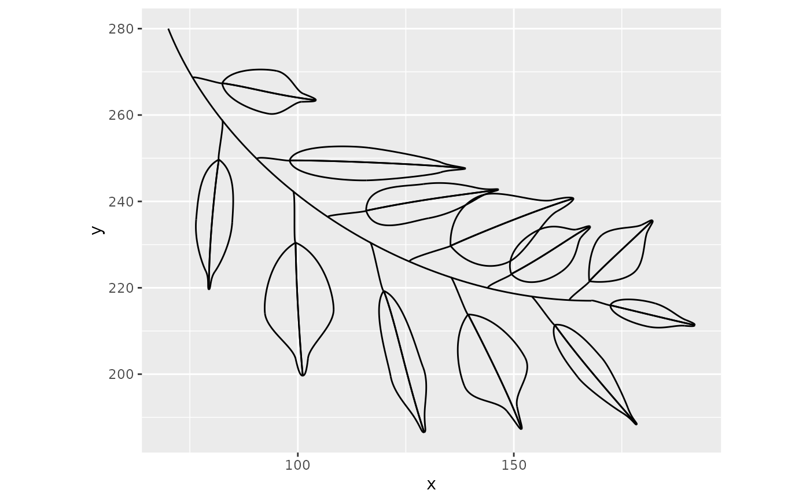

Generate a branch of benjamini leaves
Usage
benjamini_branch(
df_branch = tibble::tibble(x = c(70, 84, 126, 168), y = c(280, 245, 217, 217)),
leaf_mean_dist_approx = 10,
leaf_angle = 45,
first_dir = sample(0:1, 1),
leave_size_dist = spark_weibull(shape = 1.5, scale_factor = 0.8),
leaf_angle_dist = spark_norm(mean = 0, sd = 3),
last_angle_straight = TRUE,
leaf_size_multiplicator = 1
)Arguments
- df_branch
dataframe containing the 4 x & y bezier coordinates of a branch
- leaf_mean_dist_approx
approximate distance of two leaves
- leaf_angle
angle between the leaf stalks and the branch
- first_dir
direction of the first leaf in the branch (0 for right; 1 for left)
- leave_size_dist
Manipulate the sizes of the leaves with a spark function This function returns a function which itself returns a numerical vector of length of the number of leaves on the branch. The function will be rescaled (divided by it's maximum value).
- leaf_angle_dist
Manipulate the leaf angles with a spark function This function returns a function which itself returns a numerical vector of length of the number of leaves on the branch.
- last_angle_straight
Logical if the angle of the last leaf on the branch is very sharp (defaults to TRUE).
- leaf_size_multiplicator
Multiply leaf size distribution with a factor.
Examples
benjamini_branch() %>%
tidyr::unite(b, i_part, i_leaf, element, remove = FALSE) %>%
ggplot2::ggplot() +
ggforce::geom_bezier(ggplot2::aes(x = x, y = y, group = b)) +
ggplot2::coord_equal()
